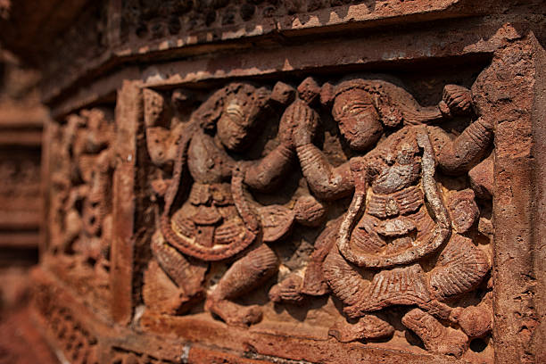

The colonial charm of Kolkata’s Victoria Memorial stands as a testament to the city’s historical significance. Bishnupur’s terracotta temples, adorned with intricate carvings, showcase the artistic mastery of the Malla dynasty. The grandeur of Hazarduari Palace in Murshidabad speaks of Bengal’s nawabi era, with its vast collection of antiques and artifacts. Alongside these, Shantiniketan, founded by Rabindranath Tagore, remains a cultural hub celebrating art, literature, and education. These architectural marvels weave a story of Bengal’s rich history, blending Mughal, British, and indigenous influences.
